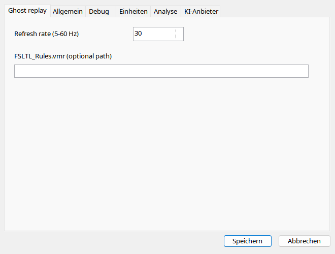

Laden Sie einen Flug in MSFS 2024 und wählen Sie die Aufnahme. Ghost hat eigene Verbindung/Thread und ist von Analysewiedergabe getrennt. Stoppen Sie vor Datei-/Sitzungswechsel. AIG/FSLTL benötigen installierte Community-Modelle; VMR installiert nichts. Ersatzmodelle können weniger Animationen anbieten.
Ein visuelles KI-Flugzeug, nicht das Benutzerflugzeug; die ursprüngliche Addon-Avionik wird nicht ausgeführt.
| Option / Aktion | Verhalten und Einschränkungen |
|---|---|
| Start / Pause / Stop | Benötigt geladenen MSFS-Flug und SimConnect. Stop entfernt das Objekt; vor Sitzungs-/Aufnahmewechsel stoppen. |
| Zurück / Weiter | Ghost um jeweils 10 Sekunden versetzen, unabhängig von normalen 30-Sekunden-Sprüngen. |
| Aktualisierung | 5–60 Hz, Standard 30. Mehr Aktualisierungen erhöhen weder ursprüngliche Datendichte noch garantiert die Darstellungsleistung. |
| Modelle | Bestes installiertes AIG/FSLTL-Typ-/Livery-Match, sonst Standard-KI. Modell muss tatsächlich in Community vorhanden sein. |
| VMR | Optional FSLTL_Rules.vmr; leer bedeutet automatisch. Regeln installieren keine Modelle. |
| Animationen | Position, Lage, Fahrwerk/Klappen/Spoiler, Steuerflächen, Motoren, Licht und Umkehrschub hängen von Aufnahme und beschreibbaren Modelleingängen ab. |
